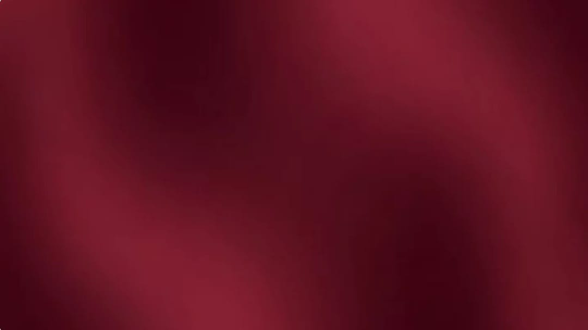
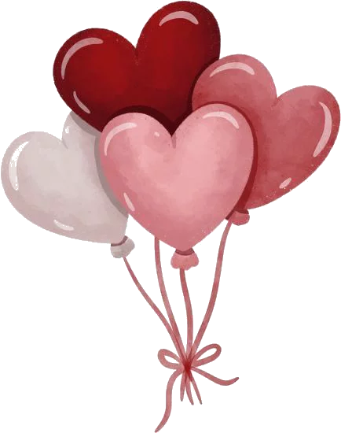
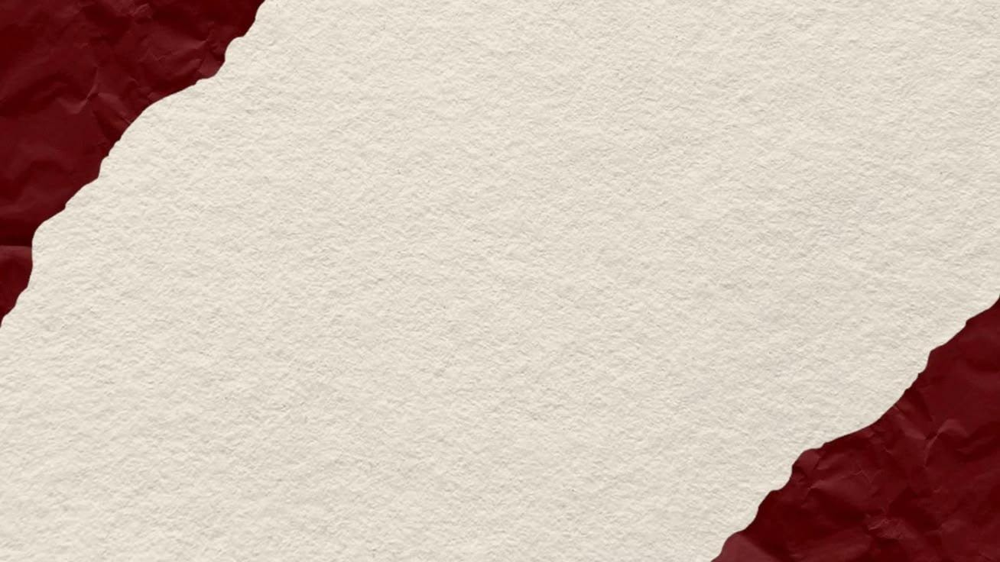
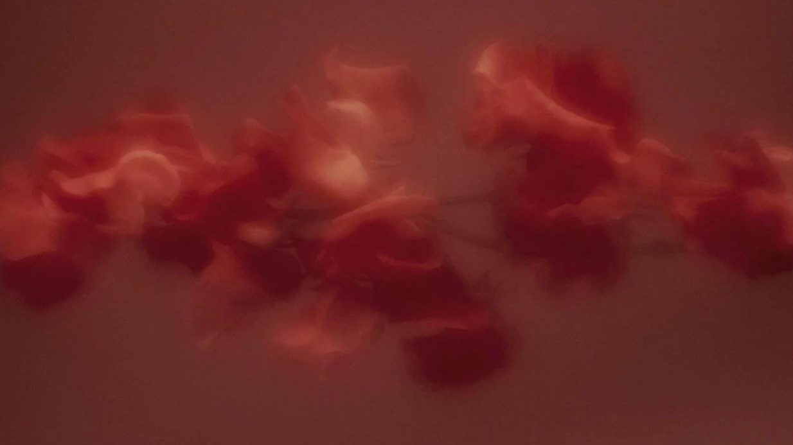
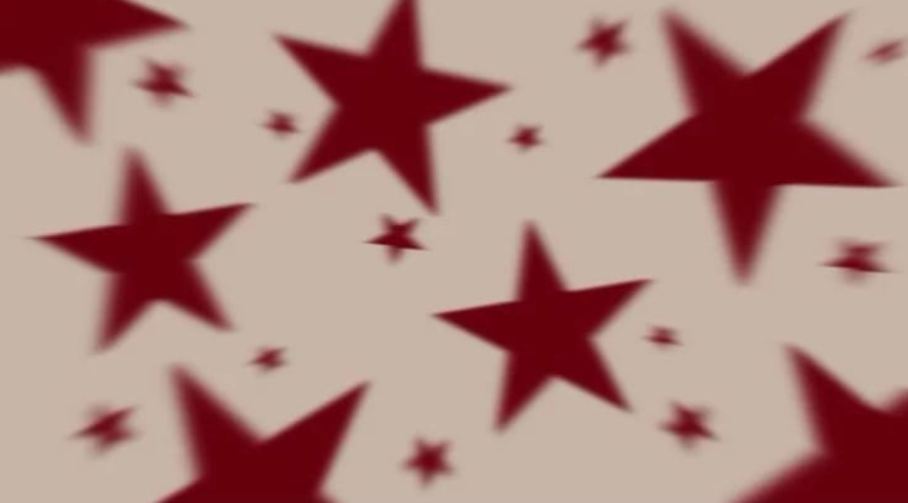
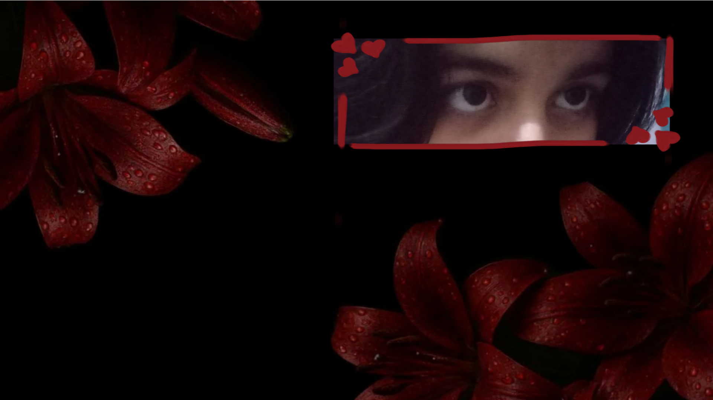
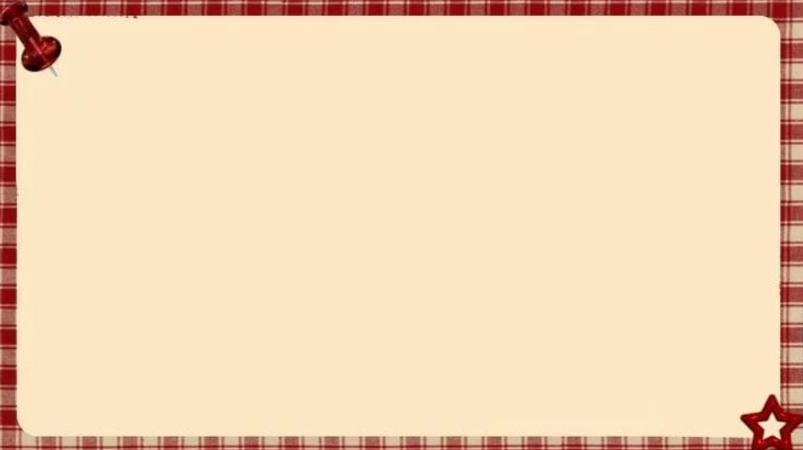

HAPPY FIRST ANNIVERSARY

So we finally hit this milestone huh?~
Feels so unbelivable that it's one year already. When we first started talking we
never had imagined things would
go this way. But I'm always thankful to the universe for everything it did.
So without any delay let's strat going through this little present I've prepared for you my princess~

Have a look at this video!
How was that?
Liked it princess?
Now have a look at the next one!~
This one is a remake of that!
But it's specially modified for you~
Uh uhh it's not over yet~
Keep scrolling baby, there's more to come~

I have saw this kinda edits soo many times on insta.
So I thought why not make a version of us?~
This edit contains a flow of your photos.
The photos are set in the order you sent them throughtout the year!~
No no it's not finished yet~
Keep going princess~
Sooo I saw many edits of the gl ships like this.
And I dediced this one is going in my list too!~
Watching this edit I was thinking we are definately
gonna serve looks when we go out together~
Okay so now time for the most special one.
I'm quiet nervous what you gonna think about this one.
But I hope you'll like it princess.
Sooo let's check it out!

Your eyes
They glow like full moon in the dark sky.
They speak to me like a letter
written with all love and care,
Whispering unspoken feelings
the words failed to convey.
They radiate a serene beauty
like the first ray of light,
creeping into the morning sky.
Their warmth hits me
like the waves hit the shore,
Never stopping
never ending their flow.
One look of your eyes
soothe my heart
like chilling breeze by a riverside
And I keep falling
deeper and deeper every single time.
So this was my first time doing poetry in english.
I always read such poetic compliments so I wanted to try
writing one about you. And when I sat for writing
the first thing that came to my mind was your eyes.
So I made it just about your eyes.
It expresses how much I love your eyes princess.
Soo we are at the veryyy end.
Now what's an anniversary without a warm letter?~
So let's scroll down to the last but not least part of this present.
A letter just for you my princess.

It's been a whole year we've been together as girlfriends. On one hand it feels unbelievable and on the other hand it feels so natural. Unbelievable in the sense that the time flew so fast and natural in the sense we have always got along so well so it was supposed to happen, it was just the matter of time. I love you the way I've never loved anyone before. I always had this tendency of liking someone then pushing them away after some time. I won't lie, I had tried this thing on you too, old habits die hard as they say. But with you the more I tried to pull away the more I came closer. Soon I left that habit behind, realizing it very well that you had become a inseparable part of my life. Who am I to pull away from a person who's in my head 24/7? When all I can think of is if you're doing okay, having your meals, taking care of yourself or not. I realized it's not possible to give up on someone when all you want is to protect that smile. That's how I came to know that you're none other than the love of my life and I'll do everything I can to be with you always. You know the day you revealed to me that your situationship was online, I felt a whirlwind of emotions. On one hand I felt a little hurt because you didn't tell me this earlier. I felt bad like if you did tell me this way back then before we became official I would've been more patient with you and would've taken more time to get your trust as you had such a bad encounter in this online field in the past. But on the other hand it made me feel very special, like even after that past encounter you gave me the chance. I didn't even have a good impression b you still chose to trust me. This really blew my mind. So all I want to say is thank you, for believing in me and in us. If you had stepped back, we wouldn't be here today, celebrating our first year anniversary together. I love you, and I will keep loving you till my last breath. In this one year you always challenged the way I used to see things and it made me want to try and become a better version of myself every single time.
So at the end I want to remind you once again that you've got me by your side. Just how you share happy moments with me, always share the bitter ones too. I'm here to take care of you, I'll always try to comfort you as much as I can through this screen. We both know the future won't be easy for us, but with your presence by my side, I promise I'll fight for us my princess. And please never change, always be this sweet, silly, cute, unhinged babygirl of me who has always unknowingly find new ways to make my heart flutter and I want that to remain the same forever.
Forever yours
Ria
THANK YOU